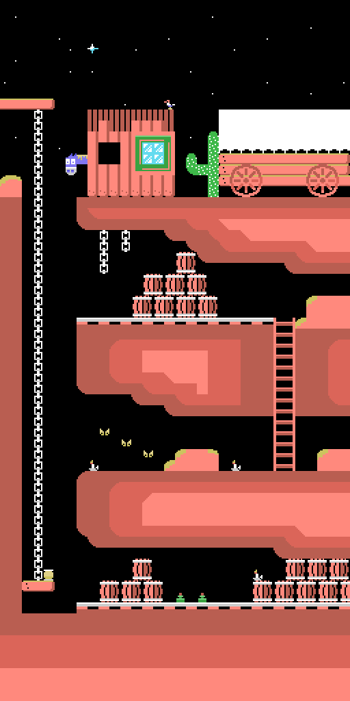

How Colt 36 is put together
Colt 36 is written in MSX-BASIC. Not a BASIC loader that fires up an assembler game: the whole game — the main loop, hit detection, the scoreboard, the bandit logic — is 63 lines of MSX-BASIC, 3935 bytes in tokenised form (the compressed internal representation the interpreter stores a program in). It is a commercial 1987 action game and it plays perfectly well. What follows explains how that is possible.

Who does what
The big block on the tape, CM2, takes up 18,352 bytes and is almost all data: the tile shapes, the four backdrops, the tunes, the sprites. Machine code accounts for 309 bytes, 1.7% of the block, in three pieces:
- USR1 (0xE300, 17 bytes) copies a block of RAM to video memory by calling LDIRVM, the routine in the BIOS — the machine's ROM operating system — at 0x005C. This is the game's entire graphics engine. Thirteen lines of the BASIC call it.
- USR2 (0xE313, 16 bytes) is the same routine right up to the last moment, where instead of calling the BIOS it does an
LDIR, the Z80 instruction that copies a block of memory to memory. It is called from exactly one place in the program: moving the level's backdrop into the work area, at the start of each level and again when the level is replayed after a lost life. - The music player (0x9B91–0x9CA4, 276 bytes), covered further down.
USR3 and USR4 are not game routines. Line 500 declares them as DEFUSR3=&H41 and DEFUSR4=&H44: they are DISSCR and ENASCR, two BIOS entry points for switching the screen off and on while drawing.
Add another 45 bytes to those 309, living in the other block and run only once, at startup.
The trick: the game doesn't draw, it writes tile numbers
In this screen mode the MSX divides the picture into 32 × 24 cells of 8 × 8 pixels, and what sits in video memory is not pixels but a table of 768 numbers, one per cell, saying which tile goes where. Colt 36 keeps a copy of that board in ordinary RAM, from 0xDA00 onwards, and always works on the copy.
So the entire game boils down to reading and writing numbers:
- Shooting is a single
PEEK. Line 305 doesPI%=PEEK(HL+225+X%\8), which is the cell under the centre of the crosshair: seven rows below the window origin and one column to the right. No geometry, no collision boxes, no walking a list of enemies. - Hitting something means changing that number. Tiles 71 to 78 are breakable objects worth 1 to 8 points, and breaking one means writing the number eight positions further along, which is its broken version.
- The bandits are not sprites. They are 2 × 2 cell blocks that the BASIC writes onto the memory board with four
POKEs, driven by a phase counter. The only real sprites — images the video chip moves around by itself — are the crosshair, the muzzle flash, the fly on the title screen and the eyes.
When it is time to show the result, USR1 dumps all 512 bytes of the visible window (16 rows) into video memory in one go. Writing 512 bytes one at a time from BASIC would be hopeless; in machine code it is instant.

Parameters at a fixed address, and scrolling for free
USR1 and USR2 take no arguments. They read their three parameters from six fixed memory locations, 0xD9E1–0xD9E6: how many bytes to copy, where to, and where from, two bytes each. What puts them there is BASIC subroutine 20, which splits each 16-bit number into low and high halves by dividing by 256, because the interpreter has no operators to do it.
The interesting part is that neither routine updates those parameters when it finishes, and the program exploits that in the two places where it matters.
The first is the vertical scroll. There is no scrolling of any kind: each time round the loop it dumps the whole window again from a different address. Moving the backdrop one row means adding 32 to the source address. That is why line 620 only rewrites two bytes — the source — and calls USR1: the how-many and the where-to are still set from the previous pass. (The crosshair, incidentally, never moves up or down: it is nailed to row 7, and up and down move the backdrop.)
The second is the pan on line 746: when the bandit that shoots you is off-window, the program walks the backdrop up to him rewriting only those same two source bytes. And there is a third place where the same source gets reused, though there the BASIC does go through subroutine 20 again: loading the tiles. The screen is split into three bands of 2048 bytes that can have different tile sets, up to 768 in total. Lines 520, 530 and 535 change only the destination and call USR1 three times, so they upload the same set of 256 tiles to all three bands. The 768 possible tiles are given up, and in exchange any cell is valid anywhere on the screen, which is exactly what makes moving the backdrop around freely possible.

Startup, and why the program cannot be listed
Tape block CM1 is 4277 bytes loaded at 0x83E8. Its start address, 0x948F, lands on a five-instruction relocator that copies itself and everything else 1000 bytes lower down:
LD HL,0x83E8 / LD DE,0x8000 / LD BC,0x10B5 / LDIR / JP 0x9088It loads at 0x83E8 rather than straight to 0x8000 because while the game is loading the one in charge is the tape loader, which is itself a BASIC program and lives from 0x8001 onwards: loading over it would trample the very program running the BLOAD.
Once in place, the startup at 0x9088 does three things: it copies five bytes over the beginning of the program, points VARTAB (0xF6C2, the pointer where the interpreter builds its variable table) at 0x8F60, and jumps to 0x73AC, the interpreter routine that starts executing.
Those five bytes are the protection: they renumber the program's first line, which on tape is 65535. See A line numbered 65535.
And the first thing that freshly numbered line does finishes the job: POKE &HFBB1,1. That address is BASROM, which the system uses to decide whether CTRL+STOP can interrupt. Set to 1, the game can no longer be stopped; and if it cannot be stopped, it cannot be listed.
The music, and why it only plays on the title screen
The player is minimal: one byte per channel per step, no durations, no envelopes. 0xFE means go back to the start, 0xFF means silence, and any other value is a note number that gets doubled and used as an index into a table of 96 16-bit periods. USR5 initialises; USR6 plays a single step and returns. It writes to the sound chip through its ports, 0xA0 and 0xA1, in six bytes, without going near the system routine.
Since nothing is hooked to the video interrupt, the music only advances if somebody calls USR6 over and over, and the only place in the program that does is line 582, inside the title screen loop. The tune's entire tempo control is the FOR H%=1TO35 sitting right behind it. The moment the game starts nobody calls it again, and from there on the sound comes from BASIC's own PLAY and SOUND.
One detail about the period table: the first entry is a dead-on C1 (32.71 Hz), but the player does not start there. Its base is the seventh entry, so note 0 in the tunes is an F#1 and the first six are never reached.
The odd-looking text in the listing
Reading the program you come across things like DATA "0000EL0CA[ON" or A$="00MUSICA^GOMINOLAS". These are not typos. The game uses its own character set, and the tile for a letter is its ASCII code plus 60. Which is why '0' (48 + 60 = 108) is the blank tile and doubles as a space, '[' is the ñ, '^' is the colon and '_' is the exclamation mark. The j, k and l on line 2010 are not letters either: they are the tiles for the bullet and the two halves of the bandit icon the scoreboard is refilled with. Digits go their own way, using tile 156 plus the figure.